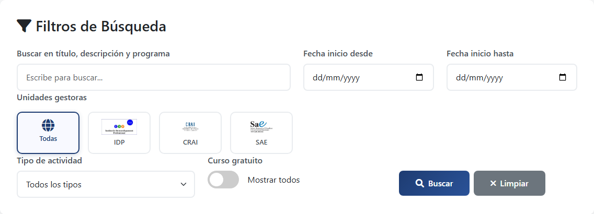
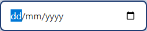

Cómo Usar los Filtros
Domina todas las herramientas de filtrado para encontrar exactamente lo que buscas
Domina todas las herramientas de filtrado para encontrar exactamente lo que buscas
El filtro más básico y potente para encontrar actividades específicas.
Cada unidad gestora organiza diferentes tipos de actividades formativas.

Especializado en: Desarrollo profesional, habilidades directivas, liderazgo

Especializado en: Recursos de aprendizaje, investigación, biblioteconomía

Especializado en: Actividades especiales, eventos, formación complementaria
Filtra según el formato de la actividad formativa.
Encuentra actividades que se ajusten a tu disponibilidad temporal.
Muestra actividades que empiecen a partir de la fecha seleccionada.
Muestra actividades que empiecen antes de la fecha seleccionada.
Puedes usar ambos filtros juntos para encontrar actividades en un rango específico. Por ejemplo: "Desde: 1 octubre" + "Hasta: 31 diciembre" = actividades del último trimestre.
Encuentra rápidamente todas las actividades sin coste.

Las actividades de pago muestran:
La verdadera potencia viene al combinar múltiples filtros.
Usa el botón "Limpiar filtros" para volver al estado inicial y ver todas las actividades.